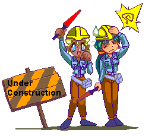

Art
I mostly just do digital art. I only was really learning and improving when I was doodling in school, so now my art style will be stuck in my 16 year old self's art style for the forseeable future. I still find it fun though!
I have a Huion tablet and Clip Studio Paint for when I'm at home. I also have an iPad and Apple Pencil to use with Procreate (though I get frustrated w/ Procreate since it's pretty limited.)
Beginner's tools
- For tablets: if you already have an iPad, then trying to snag a second hand Apple Pencil for cheap is a really good idea so you can draw on the go.
- You can also use your PC programs with EasyCanvas if you're willing to pay a pretty cheap one time fee. This is great if you don't want to pay a subscription (ew!) for Clip Studio Paint on the iPad.
- Procreate is a popular paid app, but if you don't want to pay anything there are plenty of free apps - Medibang Paint, ibis Paint X, etc.
- If an iPad isn't possible, there are various cheap graphics tablets you can order online. There are new ones always coming out so take a look around at different reviews.
- You probably shouldn't splurge on a screen tablet. Get a regular one and try to get used to the feeling of drawing on it while looking at a screen.
- For drawing programs: Clip Studio Paint is just about the best one you can get for digital illustration. Try to catch it while it's on sale.
- In the meantime, there are a lot of free drawing programs you can get. Firealpaca and Medibang Paint are both light and easy to use. Krita is also a very detailed free art program that has a learning curve.
- If you can't afford any tech, you can always use pen and paper! Your notebook margins are just begging to be scribbled in.
Beginner's resources
Under construction!
Pole Dancing
I've been pole dancing for less than a year now and I have fallen madly in love with it already. It's pretty much the one thing in my life where I feel like I'm actually leveling up bit by bit. Now to explain why pole dancing is great and why you should do it!!
(I'll uh... continue this later.)
